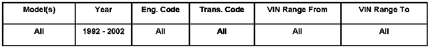
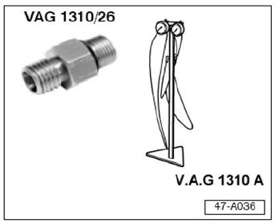
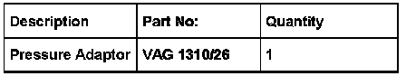

Brakes - Master Cylinder/ABS Pressure Testing Adapter
ConditionMaster Cylinder / ABS, Adaptor for Checking Pressure
Pressure adaptor VAG 1310/26 allows the use of VAG 1310 A to check for hydraulic pressure loss at either the master cylinder or ABS control unit. Before replacing the ABS unit due to an incorrect pressure reading when performing Leak Test, check brake fluid pressure at the master cylinder and ABS unit as follows:

47 06 01 Aug. 28, 2006 2002320 Supersedes T.B. Group 47 number 01-01 dated January 4, 2001 due to updated information.
Technical Background
Introduction of adaptor to allow pressure testing of brake hydraulic system.
Production Solution
No production change required.
Service
Pressure Leak Test

Obtain special tools:
- VAG 1310/26 Pressure Adaptor
- VAG 1310 A Brake Pressure Gauge

Use VAG 1310/26 with VAG 1310 A to measure hydraulic brake pressure at master cylinder and ABS unit as follows:
- Remove brake lines at either master cylinder port (A or B). Install VAG 1310/26 at port.
- Install VAG 1310 A onto VAG 1310/26.
- Perform brake pressure leak test, see Repair Manual Group 47 "Pressure leak test".

Brake fluid pressure can also be checked at the ABS unit:
- Disconnect brake lines from ABS unit to disc brake calipers (1-4), one at a time.
- Install VAG 1310/26 at each port.
- Install VAG 1310 A onto VAG 1310/26.
- Perform brake pressure leak test, see Repair Manual Group 47 "Pressure leak test".
NOTE: Once the brake pressure leak test has been completed, the hydraulic brake system MUST be purged of any entrained air. See Repair Manual Group 47, Brake System Bleeding.
Warranty
Information only.
Required Parts and Tools

No Special Parts required. Always see ETKA for the latest part(s) information.